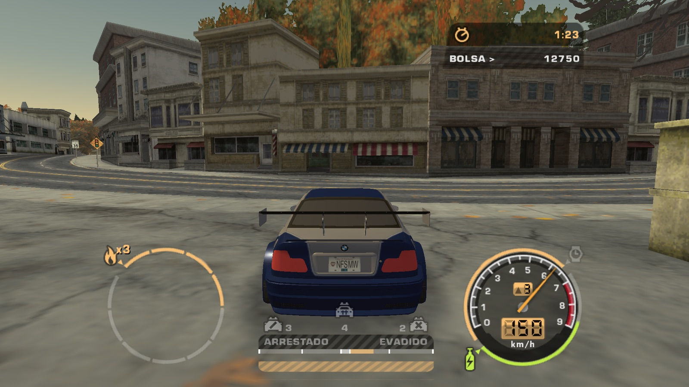
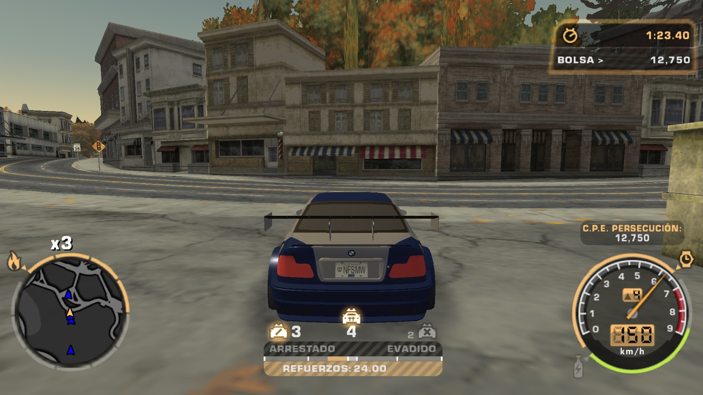
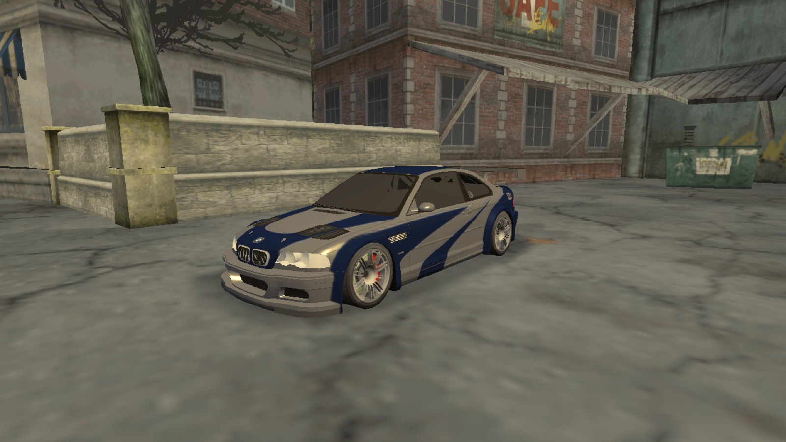
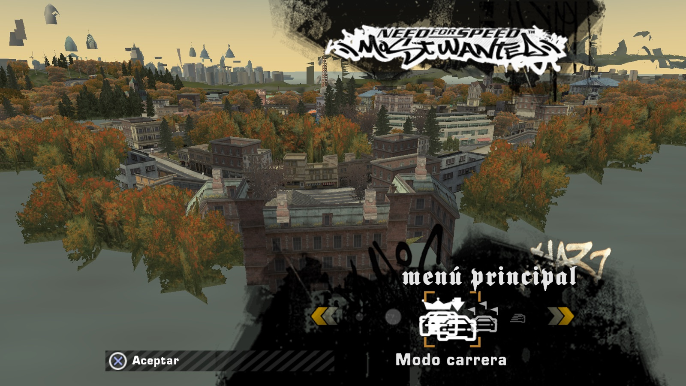
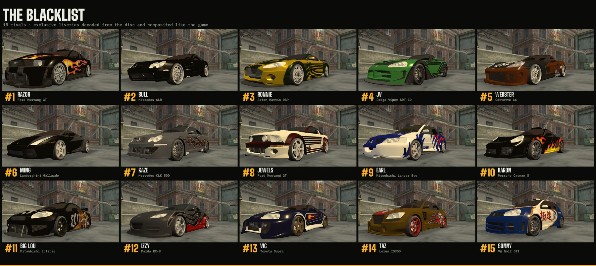
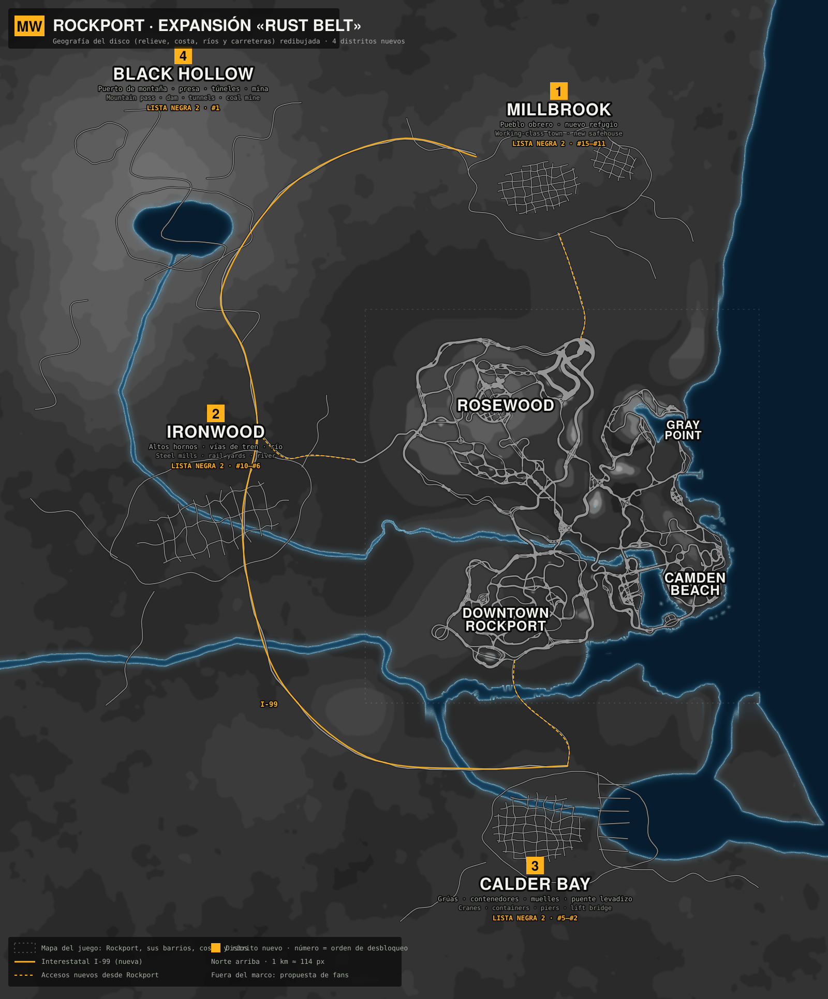
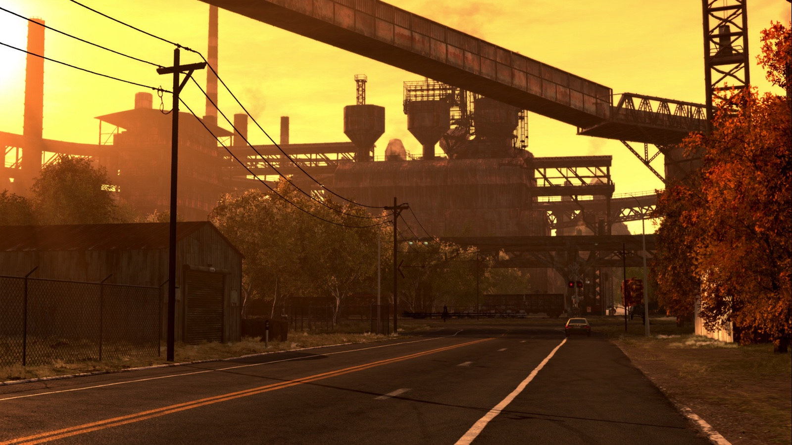
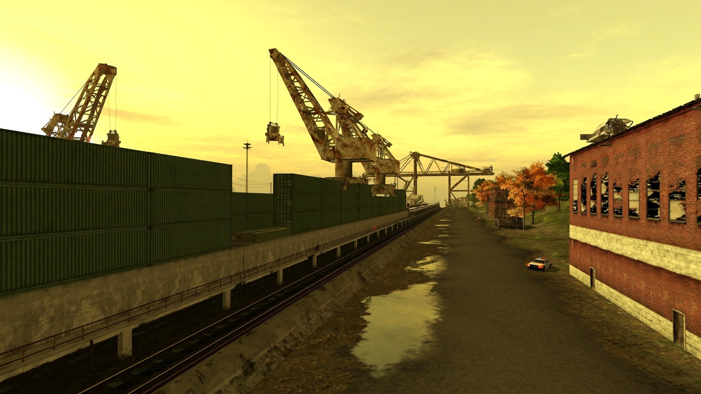
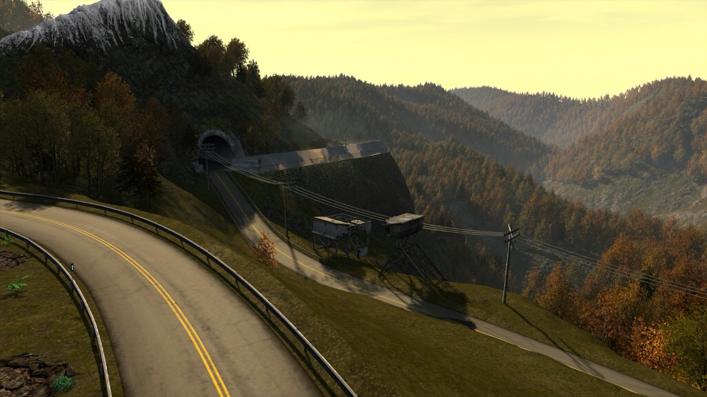
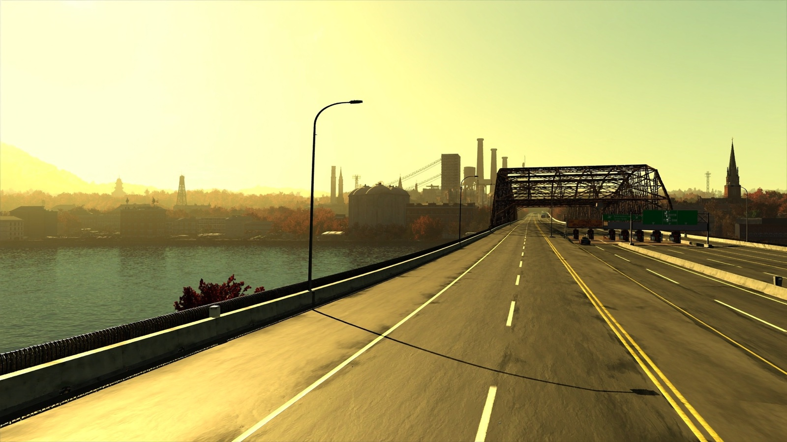

Most Wantednativo en Macnative on Mac
Need for Speed: Most Wanted (2005), funcionando de forma nativa en macOS con Metal. Lo construyes tú desde tu propia ISO de PS2: el instalador detecta si es PAL (SLES-53559) o NTSC-U (SLUS-21351) y convierte el juego en tu Mac. Need for Speed: Most Wanted (2005), running natively on macOS with Metal. You build it from your own PS2 ISO: the installer detects PAL (SLES-53559) or NTSC-U (SLUS-21351) and converts the game on your Mac. Proyecto abierto de ingeniería inversa. No incluye ni distribuye datos del juego. Versión 0.3 · Mac con Apple Silicon, macOS 14+. Open reverse-engineering project. It does not include or distribute game data. Version 0.3 · Apple Silicon Mac, macOS 14+.

De tu disco
a tu MacFrom your disc
to your Mac
Tu ISO
Your ISO
Abres el instalador y eliges tu copia del juego. Detecta la región por el propio disco.
Open the installer and pick your copy of the game. It detects the region from the disc itself.
Conversión
Conversion
Lee los formatos de PS2: geometría, texturas, mapa, base de datos, carreteras y colisión. Unos minutos.
It reads the PS2 formats: geometry, textures, map, database, roads and collision. A few minutes.
Juego nativo
Native game
Motor propio en Swift y Metal. Pantalla completa, resolución de tu pantalla, 60 fps y el tono cálido de PS2.
Own engine in Swift and Metal. Full screen, your screen's resolution, 60 fps and the warm PS2 tone.
EstadoStatus
- #15Formatos del discoDisc formatsContenedor, compresión, geometría VIF, texturas PS2Container, compression, VIF geometry, PS2 textures✓ OK
- #14Rockport completoWhole Rockport718 secciones · 5,8 M triángulos · 60 fps✓ OK
- #13Base de datos del juegoGame database255 eventos, Lista Negra, zonas, hitos255 events, Blacklist, zones, milestones✓ OK
- #12Carreteras y colisiónRoads and collision4385 nodos, carriles, 243 mil triángulos, 45 mil muros4385 nodes, lanes, 243k triangles, 45k walls✓ OK
- #11Garajes sin pantallas de cargaGarages without loading screens✓ OK
- #10Coches, ruedas, pintura y piezasCars, wheels, paint and parts91 modelos, kits, llantas y alerones91 models, kits, rims and spoilers✓ OK
- #9Motor nativo Swift + MetalNative Swift + Metal engine✓ v0.1
- #8Instalador .dmg con detección de ISO.dmg installer with ISO detectionPAL y NTSC-U probados · conversión en ~5 minPAL and NTSC-U tested · ~5 min conversion✓ OK
- #7Física, tráfico, policía y persecucionesPhysics, traffic, police and pursuitsFísica del juego, mandos, notoriedad, controlesGame physics, controllers, heat, roadblocks✓ v0.2
- #1Expansión «Rust Belt»"Rust Belt" expansionPropuestaProposal
Rockport,
pieza a piezaRockport,
piece by piece




Más allá
del puenteBeyond
the bridge
Una expansión como las de 2006
An expansion like it's 2006
La historia sigue justo donde acaba el original. Al otro lado del río espera un condado industrial con una nueva Lista Negra de 15, cada uno con un coche único de competición.
The story picks up right where the original ends. Across the river waits an industrial county with a new Blacklist of 15, each with a unique race-built car.
Misma estética, mismas reglas, mismo tono PS2. Si no parece del juego original, no entra.
Same look, same rules, same PS2 tone. If it doesn't feel original, it doesn't go in.
- 1 · MillbrookPueblo obrero de ladrillo. Nuevo refugio. Lista Negra 2 #15–#11.Brick working-class town. New safehouse. Blacklist 2 #15–#11.
- 2 · Acerías del Río2 · River SteelworksAltos hornos y vías de tren. #10–#6.Blast furnaces and rail yards. #10–#6.
- 3 · Puerto de Mercancías3 · Freight HarborGrúas y contenedores para persecuciones. #5–#2.Cranes and containers for pursuits. #5–#2.
- 4 · Sierra Alta4 · High RidgePuerto de montaña, presa y túneles. El #1.Mountain pass, dam and tunnels. The #1.





Bocetos de ambiente hechos con IA (Higgsfield). Son referencia para modelar, no recursos del juego.
AI mood sketches (Higgsfield). Modelling references, not game assets.
Se busca
tripulaciónCrew
wanted
Swift · Metal
Formatos y la decomp
Formats and the decomp
Modelado propio, nunca ripeado
Own modelling, never ripped
Distritos del Rust Belt
Rust Belt districts
Cómo colaborarHow to contribute